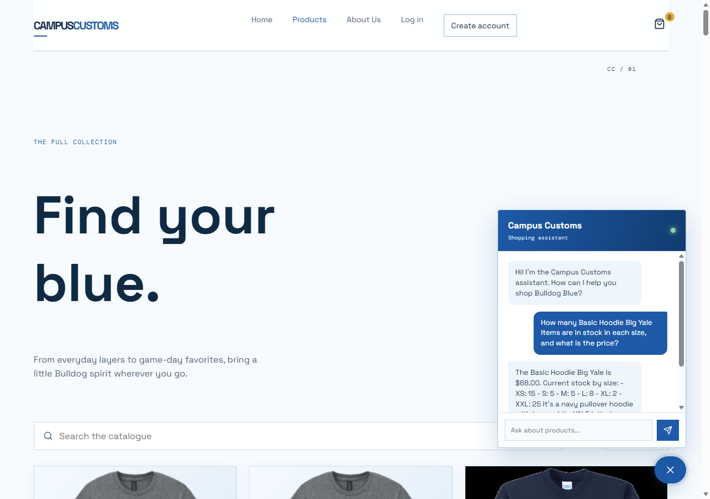
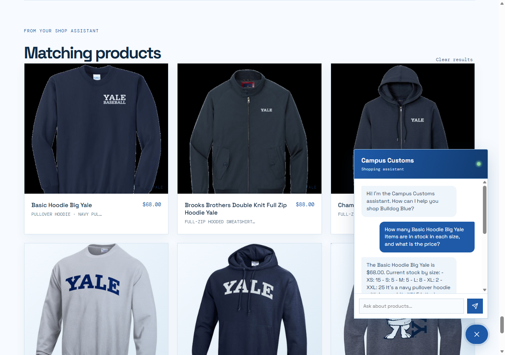
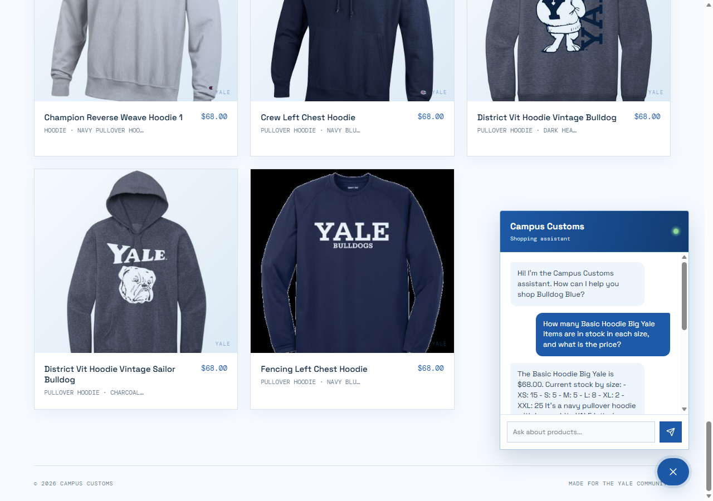

These screenshots were captured from the running React/Vite site with the FastAPI backend active. The checks cover database-grounded chat, agent-driven product cards, and a usability feature from Problem 9.
The shopper asks about the Basic Hoodie Big Yale. The agent returns the database price of $68.00 and the real stock by size: XS 15, S 5, M 5, L 8, XL 2, and XXL 25. This confirms that the chat answer is grounded in the catalogue and inventory tools.

After the chat search, the structured product matches are passed from FastAPI to React. The site renders the result as a product card with the catalogue image, name, price, garment type, and short description.

The Products page category filter is set to “hoodie.” The catalogue immediately narrows to hoodie products, which makes target items easier to find without forcing shoppers to scan the full collection.
